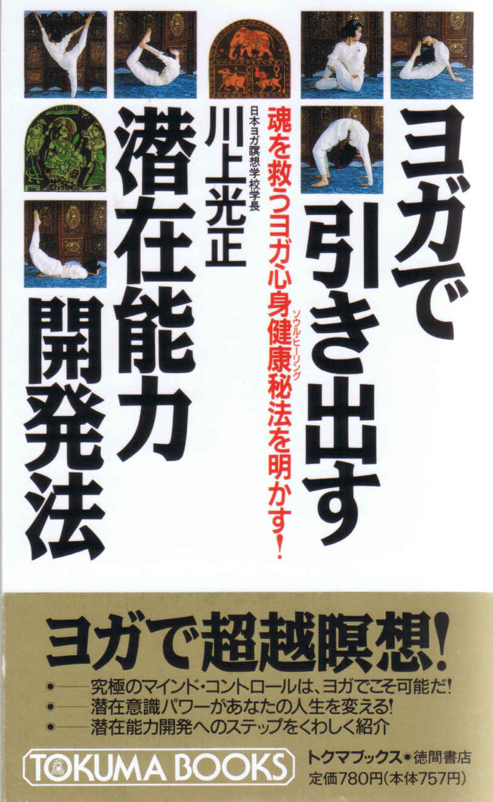
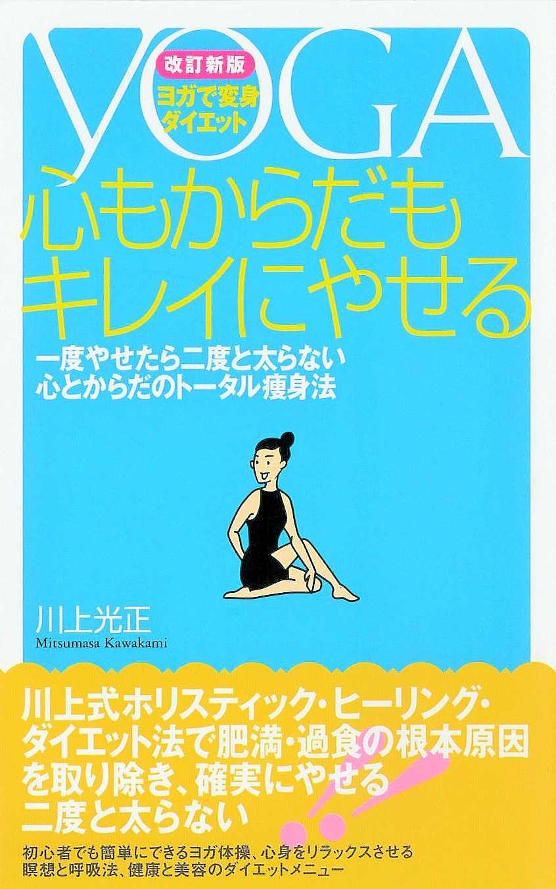
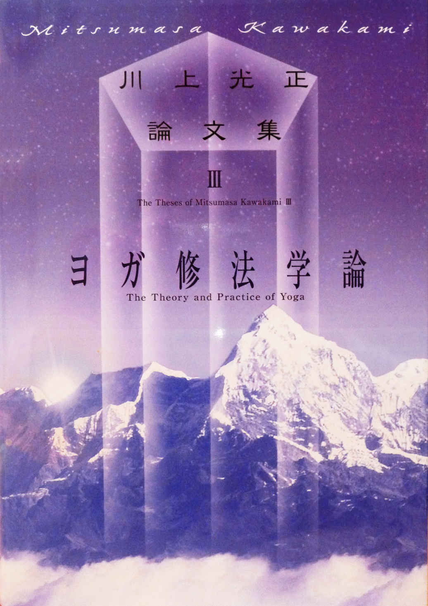
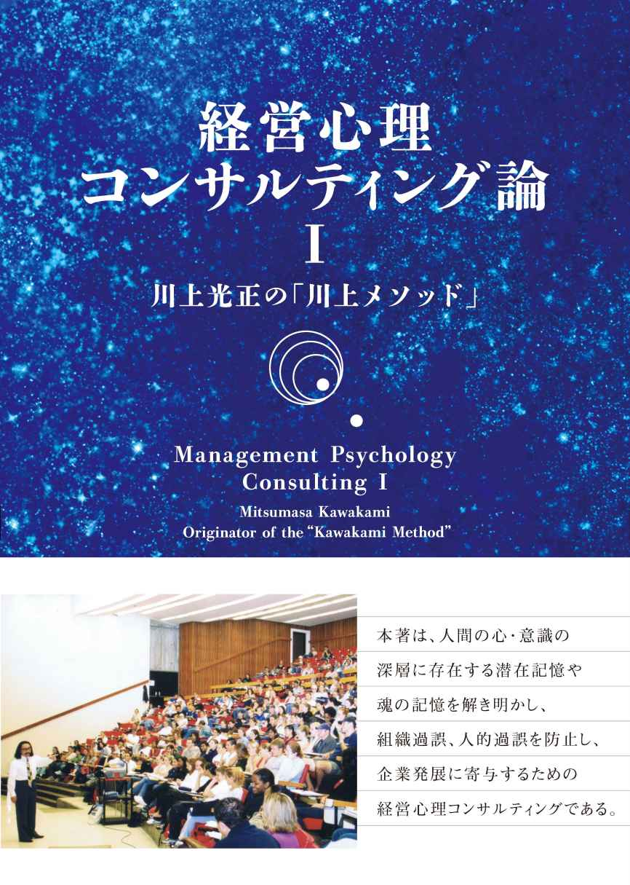

| 「知」のリーダー学 【４シリーズ】リーダーの精神哲学 | |
| 川上光正 | |
| (2017) | |
■目次 ■
「知」のリーダー学
「内」の意識を捨て組織をオープンにする
つくりっ放し、売りっ放し、捨てっ放しを戒める
「血族」ではなく「器量」で後継者を選ぶ
世襲経営の害はどこにあるか
柔軟な思考と「超然の発想」を心がける
これ以上地球のガンになるまい
企業も生命体であることを忘れない
「棲み分け」の発想を活かす
これまでの経済システムは飽和している
失敗は成功の「こやし」と心得る
心も体も「柔よく剛を制す」
「こだま」のように響き合う信頼関係を築く
時代の"天気"を天気予報で知ろうとしない
変わるものと変わらないものを見分ける
多角的な価値判断力を養う
※本電子書籍は、一九九七年に出版された『リーダーの精神哲学（第一刷）』に基づき、四シリーズの電子書籍版として制作されました。
『じつに人が認識するとき、かれは真実を語る。
認識することのない人は、真実を語るということはない。
認識している人が、真実を語る。』
（『チャーンドーギヤ・ウパニシャッド』Chand.Up. VII,17 ,1）
『無知（avidya)を崇拝する（念想する）者どもは、
盲目なる闇黒に陥る。
しかるに知識(vidya)を楽しむ者どもは、
いわば、それよりも以上の闇黒に陥る。』
（『イーシャー・ウパニシャッド』九）
「内」の意識を捨て組織をオープンにする
日本人は人間関係の種類を「遠慮」のあるなしによって三層に分けている。
一つは、遠慮の必要のない家族や身内や親しい知人、友人など、いわば、①
「内」の人間関係である。
二つは、その外にある、遠慮の必要な世界、つまり②
「世間」である。三つは、さらにその外側にある、遠慮を「働かせる」必要のない、③
「外」の世界（たとえば外国）の人間関係である。
そして、この内と外の区別に非常に敏感であり、②
の世間に対しては敏感に気を使い恥じるのに（「世間体が悪い」などの言葉に象徴されるように）、①
の身内に対しては必要以上に「甘える」。内弁慶などと呼ばれる心理パターンである。
さらに面白いのは、①
の「内」と③
の「外」がいずれも遠慮をはたらかせる必要のないことで共通しており、一番内側の世界と一番外側の世界での日本人の心理・行動様式は似通ってくる。たとえば、旅の恥はかき捨てという言葉があるように、見知らぬ土地などへ行くと、ちょうど身内に甘えるように、勝手気ままに傍若無人にふるまう人が多い。日本人旅行者のマナーの悪さが、外国でうんぬんされるのも、このくちだろう。
以上は、土居健郎氏の名著『甘えの構造』（弘文堂刊）の中の、有名な「内と外」の要約である。
さらに土居氏は、「内」という日本語が身内や仲間内という具合に、主に個人の属する集団を指し、英語のプライベートのように、私＝個人自体を指していないのは、日本で真の個人主義が根づかず、プライバシーもあまり尊重されないことと関係があるのではないかと述べている。
たいへん鋭い分析だが、この日本人の精神構造の特徴である「内」と「外」の問題は、相変わらず日本社会や日本企業の克服すべき課題となっているようだ。
たとえば、あるパルプメーカーが木を伐採しすぎるのは環境破壊に通じる、と社会（世間）から批判されたとする。このとき、社内（内）の反応は「会社の利益のためだから仕方がない」という〝甘え〟である。そして、対処法としては、国内でやるとうるさいからフィリピンなどの外国（外）で木材を伐り出すようになる――こんな企業論理をまだ通用させようとする傾向が強いのだ。
内の論理にふり回されるのは企業全体だけでなく、サラリーマン個人も同じである。
日本のサラリーマンは「ウチの会社、ウチの課」という言葉を頻繁に使う。これは日本人が自分を所属する組織の一員＝身内として位置づけ、その「内」意識を個人よりも優先させる精神性がまだまだ根強いことの証だ。
だから、証券会社のスキャンダルのように、個人では悪いことと知りつつ、会社や取締役の命令だからと組織のために法律をも犯してしまうのではないか。
「内」意識とは言葉を変えれば、自分の所属する団体や部署に閉じこもった、なわばり意識を持つセクショナリズムである。閉鎖的な集団であると言ってもよい。
この日本人の「内」意識が、これまで日本企業を大きく発展させてきた一因でもある。しかし、そのような日本市場・企業の閉鎖性こそが今、国際社会で問題になっているのだ。
話が少し大きくなったかもしれないが、国際経済社会に対する日本企業の閉鎖性という位相は、日本社会に対する企業、会社全体に対する課や個人といったように、レベルを小さくしていっても、まったく同様に通用する。
どんなレベルの組織も閉鎖的、排他的になると、甘えの構造がはびこって自浄能力を失い、内部から腐食してくるものだ。それを避けるためには、内弁慶になることなく、また外に対して居丈高になることでもない。外の世界とのオープンでフランクな対等交流が必要になってくる。
課同士、部同士、社同士、国同士――どのレベルにおいても風通しのよい、自由な情報交換、構成員の交流、それがどのレベルの組織をも活性化していくのである。
つくりっ放し、売りっ放し、
捨てっ放しを戒める
観光地へ行くと空きカンやポリ容器がたくさん捨てられている。道路を歩くとタバコの吸い殼が踏みつぶされている。
業者が車のタイヤを勝手に廃棄していくので、あたかもタイヤの〝死体置場〟のようになっている場所もある。また、ナンバープレートやタイヤなどを取り除いた、車そのものが乗り捨てられ、野ざらしになっている――。どれも嘆かわしいことだが、事実である。
これらを見て、消費者の公共心やモラルの低さを嘆くことは簡単である。しかしと翻って考えてみたい。生産者の責任は問われなくてよいのか。空き缶、ポリ容器、タイヤ、車――これらのメーカーにまったく責任はないのか。
企業はその製品の性能や効能に責任を持てばよいものであって、それがどう売られ、どう使われ、どう捨てられたかについて関知する必要もなければ義務もない、そういう考え方もあろう。
だが、それは、これまでの経済成長至上時代下の大量生産、大量消費（販売）、大量廃棄に基づいた考え方ではないか。地球環境保護、資源・エネルギーの確保が世界的なテーマとなってくるこれからは、企業といえどもつくりっ放し、売りっ放し、消費者の使い捨てをあおりっ放しではすまなくなってくるはずだ。
すなわち、製品の生産、販売だけでなく、販売後のフォローや処理法までをも視野に入れたリサイクル・システムを組織内につくっていく必要がある。たとえば、乗り捨てられた廃車の回収はそのメーカーが責任を持って行い、工場に集めてスクラップし、再利用することなのである。
瓶や缶、古着などのリサイクルはすでに一般に浸透しつつあるが、最終的には、すべてのメーカーが自社製品のリサイクル・システムを持つべきだと思う。むろん、タダとはいかないだろうが、十億円かけている宣伝費のうちの五％
をこのシステム設置、運用に回す。それだけでずいぶんゴミや廃棄物は減り、地球上もきれいになるはずだ。
つくればいい、売れればいい、儲かればいい、という時代はもう過ぎた。利潤の追求は企業の存在理由には違いないが、それと同等の力を環境保護にも注がなくてはならない。地球や社会なくしては、そもそも企業は成立しないからである。
近代の企業とは公共的存在であり果たすべき社会的責任がある。利益の一部をさいてリサイクル・システムをつくることは、その責任の一部を果たすことにもなるだろう。
そしてそれは、ただ単に製品のリサイクルにとどまらず、企業の社会への貢献、社会還元にも通じる。生産に必要な資源や原材料、あるいは人を地球や社会から得ている以上、それを再びフィードバックするのは、企業の責任であり、義務である。製品を売りっ放し捨てっ放しにしておくことは、人間がつくったモノを〝殺生〟していることになる。そんなことをいつまでも続けていてはならないはずだ。
「血族」ではなく「器量」で後継者を選ぶ
郊外レストランチェーンの大手『すかいらーく』では、同族経営の弊害を防ぐため、経営には家族に口出しをさせない、二世を入社させないことを社是としているという。一つの見識であり、経営哲学であると思う。
また、浜松の町工場を世界のホンダにまで押し上げた故本田宗一郎氏は、やはり世襲制を強く戒めて、
「結局、誰が損かというと、会社もそうだけど、せがれに気の毒だと思う。なにかやらなきゃならんとなると、無理をする。無理をすると必ず失敗する」と、器や能力を無視しての安易な世襲を事業の危険性から否定している。
では、資質、適性、能力いずれもリーダーとして適格である場合、自分の後継者には息子が適任である場合はどうしたらいいか。
そうした場合、息子を若くして経営者に就任させ、自分の腹心の部下を番頭格としてつけるという方法をとる人がいたが、これにも私は賛成しかねる。
可愛い子には旅をさせなくてはいけない。まず他の会社で平社員からスタートさせるなどして、人としてすべき苦労は味あわせておく必要があるだろう。他人の釜のメシを食わなくては、自分の恵まれた環境を痛感できないからである。きれいな社長室をいきなり与えられるのではなく、その社長室を雑布がけしてきれいにすることから始めなくてはならないのだ。
そうした下積みの苦労をして人の痛みがわかるようになる。人の痛みがわかることは、リーダーとして重要な条件である。
他社へ〝丁稚奉公〟へ出すのではなく、自分の会社で、自分の目の届くところにおいて帝王学を授けながら育てていくやり方もあるが、自分の手元で育てようとすると、親心が出て甘くなってしまうか、さもなくば、他者の目を意識するあまり必要以上に厳しくしてしまうかのいずれかになりがちである。「客観的」な養成がしにくいのである。
「血族」でなく「実力」や「器量」を判断基準にして後継者を選び、育てるにはそうした大局観、長期的視野がリーダーとして必要なのである。
私自身についていえば、三十四歳になる長男は、私の会社や組織ではなく金融関係の他社に勤務し、現在そこの支店長をしている。
彼には「その会社で取締役まで登ってみなさい。だが、もし他に自分のやりたい仕事があれば脱サラして事業を始めてもいい。独立のためどうしても援助を希望するのなら、自分の因果律・カルマを浄化してから具体的な計画を提示しなさい。リーダーにふさわしい実力を身につけ、第三者の客観的評価と信用を得て、階段を一つ一つ上がりながら協力者の人脈を広げなさい」と話している。
世襲経営の害はどこにあるか
老舗のＩ百貨店は典型的な創業者一族による世襲経営。四代目社長に三十八歳の若さで就任した御曹司のＯ氏は、バブル期に海外出店やリゾート開発、美術品販売など積極的な拡大路線をとった。ところがバブルがはじけ、実績を残すどころか借入金が膨れ上がり、株式の買い占め問題も持ち上がり、社内に不協和音も聞こえ出し、ついに引責辞任にまで追い込まれた。九三年五月のことである。不況期には企業のトップの交代が多く起きるが、最近はとくに、同族会社の若社長の更迭が目立っている。
日本企業に特徴的なこととして、オーナー一族が要職を占める同族経営と、社長の息子が代々、社長職を継いでいく世襲経営があげられるが、好ましいこととはいいがたい。
世襲制、同族経営のすべてがいけないとは思わないが、デメリットのほうがはるかに多い。同族、血がつながっているというだけで、リーダーとしての能力や適性を無視して、事業を継承したり独占したりするのは、組織の硬直化を招き、内紛の原因にもなるなど、リスクや弊害は計り知れない。
町工場や商店といった企業規模の小さい「家業」程度の会社なら、同族経営もやむをえないだろうが、いやしくも株式を公開しているほどの企業なら、それはもはや公共的な存在であり、社会的責任も株主に対する義務も生じてくる。その公的な機関を一族で独占、あるいは私物化してしまうのは、やはり許されることではないだろう。
アメリカの鉄鋼王アンドリュー・カーネギーは、「事業もまた、富と同じく公共の財産であり、その職務を引き継げる才能のある者のみに、財産の運営を任せることは事業家の義務である」「父親が子供にその職業をゆずるに当たって、実業のわずかに表層のことのみを学ばせ、それをもって実業教育を終わったものとして、ただちに営業の全権を委ね、なんらの才覚もないのに、巨額の収入を支配させることほど、無謀、かつ無益なことはない」と述べて、安易な血族への事業継承を強く戒めている。巨大な財を成しながら、カーネギーホールを寄贈するなど、その富を「公共化」することに熱心だったカーネギーの言葉だけに説得力がある。
世襲経営を肯定するオーナー経営者の中には、「最適任者がたまたま息子であっただけだ。他の役員の反対もなかった」という人もいる。
しかし、二代目というのは概して下積みの苦労に乏しく、逆境の経験もうすい。そのため、直言、諌言してくれる長年の番頭役を遠ざけたりして、経営が独善的になりやすい。他の役員にしても、世襲経営に対して表立って反対しにくいものだ。そうするうちに、部下の意欲と忠誠心はうすらぎ、人心は離反していく。
企業のトップや要職をめざす競争が公正に行なわれなければ、人の心が離れ、結局、組織は衰退へ向かうだろう。世襲経営の最大のリスクはそこにある。
「才能ある後継者の育成は、実業家が社会に対して負う最大の義務である」――これもＡ・カーネギーの言葉。つまり、後継者を「血族」の中からでなく、「組織」の中から育てることこそ、社会的存在である企業・トップリーダーの最大の義務なのである。
柔軟な思考と「超然の発想」を心がける
ガリレオ・ガリレイは十七世紀の初め、コペルニクスの唱えた地動説を支持して、天動説の立場をとる当時のカトリック教会から迫害され、宗教裁判にかけられた。彼は「それでも地球は回っている」とつぶやいた――あまりにも有名な歴史上の事件だ。
だが、最近になって、ローマ法王がようやく、この教会の処置のあやまちを認め、ガリレオは正しかった、動いているのは天ではなく地球のほうだという見解を示したという。事件からほぼ三百六十年ぶりに、ガリレオの名誉は回復され、教会側は地動説を科学的真実としてやっと受け入れた、というわけである。
絶対化、硬直化した組織がいかに非常識な思い込みをするか。その組織が持つ思い込みから逃れ、それを是正することがいかに難しいかをよく表すエピソードでもある。
と同時に、当たり前だ、常識だと私たちが考えていることは、意外にも、当たり前でも常識でもないことがある、という教訓にもなっていると思う。カトリック教会だけでなく当時の人々にとって天動説はみじんも疑いのない常識であったに違いない。
昨日常識であったことが今日はもう常識でなくなっていることも、そう珍しいことではない。つい最近の内外の政変を見ても、ソ連の消滅やベルリンの壁の崩壊、自民党一党独裁の終焉など、それが生じるまではまず絶対あり得ないというのが常識であった。
旧来の物事を、将来も不変に続いていくと安易に固定的に捉えていくことで、時代に遅れ、時流をつかまえられずに、企業も衰退に向かう。
企業がつねに新しい商品、新しい価値をつくり出して世に問うていかなければならない宿命を帯びている以上、固定観念に捉われない柔軟な思考と「超然の発想」、新鮮なアイディアが必要になってくる。
「超然の発想」とは、既成の事実や物事の道理にとらわれず、常識からかけ離れた考えや思いつきをすることだと、私は定義している。
ソニーのウォークマンは、ご存じのように再生機能だけで録音機能はついていない。それ以前のテープレコーダーは再生・録音の両機能がついているのが常識だった。ウォークマンはこれを「聴くだけ」の単機能にして、そのかわり小型、薄型にして持ち運びの利便性を強調して大ヒットを飛ばしたのである。みごとな発想の転換、「超然の発想」である。
昨日の常識が今日も通用すると思い込まないこと。今日、異端であったものも明日にはスタンダードになっているかもしれないからだ。
そのために、とくにリーダーは、硬直化した思考を捨て、柔軟な思考と超然の発想を心がける必要がある。
これ以上地球のガンになるまい
日本での死亡率第一位にランクされ、恐れられている病気といえば、いうまでもなくガンである。平成七年、日本人の年間死亡者総数の二八・五％
約四分の一はガンが死因だというから、ガンは憎むべき敵という人もいる。
ガン細胞が体内でふえると、この異物をやっつけるべく免疫細胞が働く。しかし、ガン細胞の増殖が免疫力を上回って、正常細胞は駆逐され、やがてガン細胞は生命体を制圧し死に至らしめる。ガン細胞の勝利である。
しかし、ガン細胞は本当に生命体内での勝利者なのだろうか。
そうではないのだ。ガン細胞が生命体内で勝利者になることは、そのまま宿主である生命体の死を意味する。宿主が死んでしまえば、勝利者であるはずのガン細胞も同時に死滅してしまう。ガン細胞は生命体内にあってはじめて「生きる」ことが可能なのであって、生命体という場がなくなれば、みずからも死なざるをえない。つまり、ガン細胞は自分を殺すために増殖しているともいえるのである。
これは、どこか象徴的である。
みずからの利益、みずからの繁栄のみを追求するあまり、廃液を河川に垂れ流して省みず、深刻な公害問題を引き起こして社会的にも糾弾され、結局、企業規模を縮小せざるをえなくなった会社。
あるいは、自国の経済成長だけをひたすら追い求めて国際的バランスをあまり考慮に入れず、世界から「おまえの国だけが儲けすぎだ、もっと貿易黒字を減らせ」と詰め寄られている日本。
いずれも、ガン細胞に似た自殺行為をしているのに似ている。
また、生命体とガン細胞の関係は地球と人間との関係に類似しているかもしれない。人間は科学と文明を発達させ、便利さと快適性を飽きることなく追い求めてきた。真夏でもエアコンのきいた室内にいれば汗をかかずにすむ。歩けば一時間かかるところにも、車を飛ばせば疲れ知らずで五分で行ける。確かに便利で快適になった。だが、人間の都合や快楽を優先したことで、地球の環境を犠牲にした面が大きい。
山を壊してゴルフ場をつくる。多くの緑が切りとられ、たくさんの土が捨てられ、おびただしい数の生物が死に、生態系がくずれる。芝の維持のため大量の農薬がまかれ、河川を汚染する。――つまり、人間が自分たちの快楽や便利のためのモノや施設をつくるたびに人間の宿主である地球の一部を破壊しているのである。
地球にとって人間は場合によってはガン細胞であり、自分たちの〝快楽の増殖〟を繰り返すことで地球を少しずつ殺しつつある。それは、人間自身の存在をも危うくしている――このことを私たちはもう一度しっかり肝に銘ずるべきだと思う。
私たち人間は地球という生存の場を「間借り」しているにすぎない。それを所有していると勘違いして、気ままに使用、濫用することは許されない。
むろん、生存のために必要最小限なモノや施設をつくることは必要だが、虚栄や快楽のために地球をいじることには限界があるはずだ。その限界を知って謙虚になることが、人間の創造的叡智であると思う。
企業も生命体であることを忘れない
最近のカメラはほとんどが全自動式になっていて、レンズを対象に向けるだけでピントや露出は機械が自然に調節してくれる。
エアコン装置も単に部屋の温度を上げたり下げたりするだけでなく、一定の温度より室温が上昇してしまった場合は冷暖房の自動制御装置が働いて温度を下げ、逆に一定温度が下回った場合にはその装置が作動して温度を上げる、その結果、室温が常に一定に保たれるようになっている。
科学や技術の進歩のおかげだ、便利なものだと感心する人も多いはずだ。
しかし、よく考えてみよう。科学や技術の発達するはるか以前から、私たち人間の身体にはこうした自動調節機能があらかじめ備わっていたのである。しかも、その機能は機械のそれよりずっと精密である。
たとえば、人間の目の働きは実に絶妙で、いきなり遠くや近くを見ても、その距離の変化に瞬時に対応して焦点を合わせてしまう。その精巧さは全自動のカメラの比ではない。
人間の体温調節機能もエアコンよりずっと精緻であり、外の温度の変化にかかわらず、発汗や血管の拡張・収縮などの自動作用によって、三六～三七度の一定体温がつねに保たれている。
人間の体は、人間の頭脳を傾けてつくった機械よりもはるかに〝利口〟なのである。
こうした、人間の身体にあらかじめ備わっている調節機能を「ホメオスタシス（恒常性の維持）」という。体温だけでなく血圧や血液の成分など、生命体の内部環境や生理機能はこのホメオスタシスによっていつも一定に維持、調整されているのだ。
また、小さな傷なら自然に治してしまう力、病原体が体内に侵入してきたときにすぐに抗体をつくって、それを無害化してしまう、いわゆる免疫の働きなども「生体防衛システム」とよばれ、ホメオスタシスの一種と考えられている。
これらは、生命体が持っている素晴らしい自助作用、自浄能力といえよう。言い替えれば、自己治癒力でもあろう。そして、この自律性、融通性はけっして生命を誤った方向へは導かない。ホメオスタシスが正常に作用しているかぎり、人間は死でなく生の方向へ導かれるのだ。カゼをひけば、薬を飲まなくとも汗が出て、熱を下げてくれるのである。
このようなホメオスタシスに代表されるすぐれた生命システムが、現代の企業組織にあるか、と問えば、答えは否定的にならざるを得ない。
人間は満腹になれば、もうこれ以上は食べられないという信号を脳が発して、食行為を中断する。しかし、いくら儲かっても、まだ「利益を食べ足りない」とガツガツ儲けようとする飢餓会社。逆に、利益を出して内部留保を殖やして会社の体力をつけなくてはならない時期なのに、財テクに大金を投じたり、本業そっちのけで土地投機や株投資に走ってみたりする企業。不況で少し業績が落ちたからと、リストラと称して必要な人材までクビにしてしまう組織。
すべて、企業組織としてのホメオスタシスが狂っているのではないか。自浄能力、自省力をなくした組織は遠からず組織の崩壊、「死」を迎える。企業も一つの生命体であることを自覚したい。
「棲み分け」の発想を活かす
ダーウィンの唱えた進化論の核は、何といっても突然変異と自然淘汰による適者生存である。
生物や種は、すぐれた機能を有した個の登場によって淘汰され、生き残ったものが進化を重ねていく。簡単にいうと、そういうことになる。見方を変えると、適者＝勝利者だけが後世にサバイバルできるという、一種、残酷な情け容赦ない論理といえる。
この生物進化を説明する考え方は、これまで専門の生物学の分野のみならず、さまざまな分野で「真理」として応用されてきた。また、近代以降の人びとの思考形態にも、かなり根深くすりこまれている。
たとえば、ビジネス社会にあっても適者生存は当たり前のこととして考えられている。強い会社、大きな会社、すぐれた製品をつくっている会社――こうした企業が競争に勝ち抜き、そうでない会社は敗れ去っていく。こうした非情な競争原理は自由主義経済にあっては大前提となっている。
適者生存とは視点を変えれば弱者切り捨てでもある。それは、自分さえ適者＝勝利者として生き残れば他はどうなってもいい。勝ち残った者こそが正しいという、エゴイズムの論理に比較的容易にすりかわってしまう恐れがある。
戦後、奇跡的な復興と驚異的な高度成長によって世界一にまでなった日本経済。この事実だけみれば、日本は自由競争原理の「勝者」である。では、この先、世界経済は日本をリーダーとして発展、「進化」していくのか。
残念ながら、その兆候は意外なほど少ない。むしろ聞かれるのは、日本人は傲慢だとか貿易黒字を減らせ、市場を自由化せよなど、日本に対する不満と批判の声が多い。
確かに日本は、国際経済社会で勝利者のポストを占めた。その裏には、ダーウィニズムに似た、競争に勝つことだけを市場目的とする、「勝てば官軍」式の企業論理が潜んでいた。それが、他国から見れば、勝利者のおごりや優越感と映るからではないか。今後の日本の企業が視野に入れなくてはならないのは、さらなる進化や競争ではなく、「共存共生」の思想である。まして、米ソの冷戦構造が消滅した今、片方が一方的に勝ち、残りは負ける、勝者だけが生き残り、敗者は滅びるという、単純な競争原理は効力を失いつつある。多くの国の利害関係はリンクし、経済もそれぞれが依存しあわなければ成立しなくなってきているからだ。
Ａ国がＢ国の経済市場を制覇して、Ｂ国が完全敗北したとする。が、Ａ国は勝利者とはならず、Ｂ国が打撃を受けたことでＡ国もまた損害を受ける――そういう共同体的な構造に世界経済がなっていくからである。
そのような経済構造にあっては、適者のみが生存していく進化論は危険である。適者も不適者も、共に生き残っていける共生論こそがビジネス社会にも必要なのである。
あたかも、科学の分野でも、ダーウィニズムはしだいに見直されつつある。代わって、進化論の主流となっている理論は、適者生存でなく、「棲み分け」である。つまり、すぐれた個が突出して、彼が先駆者となって種を進化させていくという考え方でなく、生物は棲み分けされた中で、種全体がいっせいに大きく変化しはじめ、進化していくという考え方が主流となっているのだ。
たとえば植物でいうなら、地球上には背の高い樹木、ついで灌木などの低い樹木、そしてシダ類のような植物も存在している。ダーウィニズムでいけば、やがてどれかが適者となって、すべての植物の背の高さは同じになるはずだ。
しかし、そうはならない。植物が空間的に「棲み分け」を行っているからである。
自然界では、こうした「棲み分け」が実に見事になされている。それが崩れるのは、たいてい人間が介在した場合である。
「棲み分け」とは、要するに、強者が弱者を凌駕することでなく、いずれもが平和共存し、共生することである。日本経済も企業も、勝者の道でなく、世界との共存、共生の道を探ることが急務なのである。
これまでの経済システムは飽和している
市民の権利意識や自己主張が強いフランスやイギリスだったら、革命が起きているだろうといわれることがある。日本（とくに東京）の高速道路の渋滞である。
事故が起きたわけでもないのに、自然に渋滞している。目的地に行くつもりで高速道路に入っても、そのため、かえって時間がかかってしまう。どこが高速道路なのか、と腹も立とう。しかも、料金はかなり高い――これで日本人はよく暴動を起こさないな、よほどガマン強いんだな、とあきれるやら感心するやらの外国人が少なくないそうだ。
なぜ、自然渋滞が起こるのか。答えは簡単である。道路や国土が狭いわりに車の数が多過ぎるからだ。いいかえると、需要を超えて供給が飽和状態になっているからである。
車を大量生産する。広告・宣伝をして購入をすすめ、消費をあおる。しかし、とくに車のような耐久財は消費にも限界がある。いくら買ったとしても、一家にせいぜい三台どまりだろう。収容スペースにも限界がある。買い替え需要を計算に入れても、一生のうちに一人がのべ台数で五台買うかどうか、であろう。
つまりは「モノ余り」なのだ。生産→販売→消費のゲームのような循環サイクルにも限界があるのだ。まして、日本では消費人口が先細りに減っているし、資源や原材料にも限りがある。内需拡大といった行政指導や減税をしても、安売りをしても、やがて行き止まりがくる。
山を削り、川を埋め立てて、道路をつくり、ビルや住居を建てる。古くなったら、また建て替える。しかし、こうしたスクラップ＆
ビルド式にだっていずれ限界がくるはずだ。
マイホームが建てられれば、それに伴って家具需要があるが、近ごろでは、狭いスペースの有効利用で家具をつくりつけにして家を建てるケースがふえてきたらしい。そこでピンチに陥った家具メーカーもあると聞く。
モノ余りというより、もっと構造的な問題だろう。
つまり、これまでの経済システム――モノの循環メカニズムや景気構造――が飽和状態に逹して、そこから先の活路を見いだせないままなのである。
いってみれば、資本主義をこれまで支えてきた根本システムの行き詰まりなのだから、これに対する有効な処方箋はおいそれと見つからないだろう。
だが、解決への方向性ならいくつか見えてくる。
たとえば、一つには、少品種大量生産をあらためて、多品種少量生産にして、できるだけ多くの企業、多くの国が「共生」「棲み分け」できるような生産形態を少しずつ形成していくこと。
もちろん、エコロジーも重要なキーワードだ。たとえば、エントロピーの法則を見るまでもなく、工業化社会ではゴミはたまる一方である。しかし、生態系システムの中では、Ａという生命体が出した排泄物をＢという生命体が生存のために再利用し、そのＢが排出した物質をＣが活用し・・・とくり返して、最後にはＡに利用できる形で戻ってくる、天然のリサイクル・システムが確立している。
このリサイクル・システムを企業活動の中に取り入れていく必要がある。
「二十一世紀の企業は地球や自然に〝支持〟されなくてはならない」
私の持論だが、地球に支持されるには、まず地球（環境）を尊重する企業活動を行わなくてはならない。いずれにせよ、多くの企業人は地球規模の視野が必要になってくる。
そこに求められるのは、経営効率でなく、経営理念、経営哲学である。そして経営哲学は企業人の精神哲学から生まれてくるものなのである。
失敗は成功の「こやし」と心得る
成功は忘れよ、失敗は忘れるな。私は常日頃、部下や門弟たちにそう言い聞かせている。仕事や組織運営の上で、うまくいくこともあればいかないこともある。成功ばかりではないし、失敗続きで終わることもない。だからまた、人の世は面白いのである。
成功と失敗のくり返しの中で、一つの法則が導き出せる。それは、「成功に酔うな、失敗に学ぶべし」ということである。
成功までのプロセスは大切である。というより、成功した結果から得るものは少ないと心得ておいた方が良い。
成功が私たちに与えるものは、満足感、陶酔、慢心、おごりくらいで、実は、次の失敗を呼ぶ要素として警戒すべきものばかりである。
一方、失敗はたしかによくない。苦い体験であり、劣等感を覚え、ときには絶望的にもなる。できれば忘れてしまいたい。
だが、とそこで冷静に振り返りたいものである。失敗こそ歓迎だ。失敗こそ学習と分析の格好の対象となり得る。一つの仕事を終えて、
「あそこが失敗の原因だった。なぜ別の方法をとらなかったのか」
「このポイントさえ避けていれば成功だった。どうして回避できなかったのか」
そう反省される失敗箇所にこそ、次回の仕事を成功に導く〝種子〟がつまっている。それを検討、分析し、対策を練ることが次の成功へつながっていく。
つまり、「失敗こそ成功の最高のノウハウ」なのである。
だから、成功の喜びは忘れるべし。失敗やミスに学び、その原因を感情にとらわれず客観的に研究してみることが大切であり、部下にもそう指導することが必要になってくる。
第二次世界大戦の敗戦国は、日本、ドイツ、イタリアだったが、この三国はある時期、いずれも世界のトップクラスの経済力を備えることができた。一方、戦勝国のアメリカ、イギリス、フランスなどはそろって低迷していた。
人も集団も成功に胡座をかき、勝つたから成功したからと慢心し油断していると、いつかは追い抜かれ敗退する。うさぎとカメである。
一見不思議なように見えて、この理由は意外に簡単である。まさに、負けた者は失敗に学び、勝った者は成功におごったからである。
具体的には、
△
負けた者、失敗者は反省し、悪い面をあらためるが、勝った者、成功者は「これでいい」「このままでいい」と真剣な反省をせず、現状維持に甘んじてしまう。
△
失敗者は必然的にゼロからの再出発をせざるをえないが、成功者は勝利に満足する。
それが新しいことにとりかかる意欲の差となって現れる。
つまり、失敗は成功のもとであると同時に、成功は失敗の引き金ともなるのである。
現代の日本型企業も「成功」にうつつを抜かしていると、次にはまた、手ひどい失敗をこうむり倒産するかもしれない。いや、すでにその兆候はかなりあちこちに見られる。
失敗がいけないのは、その失敗を何ひとつ自覚しないときだけである。自覚できた失敗はすべて次の行動への「こやし」となる。
だから、失敗に落ち込んでいる人や、部下の失敗の対処法に悩んでいるリーダーたちに私は強く言いたい。
失敗はこやしである。
失敗したら成功に一歩近づいたと思いなさい。
今日の敗者は明日の勝者である。今日のビリは明日のトップである。
過去に学ばないものに未来はないという。同様に、失敗から学ばないものに成功は訪れないのである。
心も体も「柔よく剛を制す」
シチズン時計の新社長に就任した春田博氏は、週刊新潮（一九九七年六月十九日号）で、「ヨガを始めて他では味わえない発見を二つした」とヨガの効用を語っていた。
一つは「日常生活では、体の関節の三割ほどしか使っていないこと。その関節を動かし、関節に溜った老廃物を掃除してやると、それは大変気持ちがよい。足の五本の指を丁寧に曲げたり、伸ばしたりするだけでも体中に血がめぐって、体が温かくなってくるのがわかる」
二つには「意識が身体を支配することである。トレーナの指示に従い、安息の状態のまま、体の各部に意識を移していくと、まさしく意識が体に影響を与えていることがわかってくる」と。
春田社長は、初心者向けのハタヨガ・アーサナを実修していると思うが、それでもヨガの効用は確実に心と体によい影響を与えているようだ。
氏はヨガを始めてまだ三年目だと言うが、心と体以外にもヨガの効用があったのではないだろうか。
体が柔軟になれば、心にもゆとりができ、脳の働きも活性化する。瞬発力や直観力、集中力、記憶力、さらには創造力までもが顕著によくなってくる。
一流のスポーツ選手は挙って体が柔らかい。日本の現役選手から大リーガーのドジャースに入団した野茂英雄投手は、体を一回転近くまで捻るほど柔らかく、ドルネード投法で大リーガーの選手を三振に打ちとっている。
日本のプロ野球でも一九九四年から三年連続でＭＶＰと首位打者を獲得し、シーズン最多安打日本記録と、一九九七年六月二十四日に達成した二百九打席連続無三振のプロ野球日本新記録を持っているオリックスのイチロー選手も、体が大変柔らかい。現在も、瞬発力とスピードのある振り子打法で記録を伸ばしている。今年も記録を更新することは間違いないだろう。
西武ライオンズの松井稼頭央選手は、ウエイトトレーニングを行なっているが筋肉は大変柔らかい。しかも、俊足で打率三割二分、盗塁四十六個（平成九年八月二十四日現在）と記録も上昇中である。
トレーナーも彼の柔軟な筋肉と瞬発力を認めている。西武のヤングライオンズのホープとして今後の活躍を期待したい。
私は、野球の専門家ではないが、十代後半から、ヨガやウエイトトレーニングを始め、それなりの結果を得た。一九七二年のＩＦＢＢ・国際ボディビル連盟公認の〝ミスタージャパン〟日本選手権大会で総合優勝した。
その後、一九八三年にはインドでヨガサムラット<ヨガの王>の称号を授与された。そして、いつでも心頭滅却し全身（特に舌）に、直径二ミリ、長さ四十五センチのバーベキューにも使える大針を通すこともできるようになった。
筋力のアップには、ウエイトトレーニングが不可欠であるが、私の体験から言えば筋肉を柔軟にするには、食事（栄養）、休養（リラックス）、ストレッチ（柔軟度）、呼吸（調息法）をプログラムの中に組み込む必要がある。
特に食事の内容はバランスのとれた食品を選び、カルシウムを含んだ牛乳や乳製品はいうに及ばず、小魚やワカメなどの酢の物、グレープフルーツやレモンなどの柑橘類を毎食摂取することをおすすめしたい。夕食後の牛乳はカルシウムの吸収率も良く、筋肉を柔らかくし、イライラやストレスを緩和する働きもある。
逆に筋肉を硬くするのが、過度の飲酒や肉食である。アルコールは適量は身体や心をリラックスさせるが過ぎると良くない。アルカリ性の成分を含んだワイン類は適量であれば良い。全身マッサージも筋肉を柔らかくするには大変良い。オリックスのイチロー選手は、子供のころから父親に愛情あふれる全身マッサージを受けていたと聞く。彼の筋肉は幼い頃から父親によって鍛えられた柔軟性を持つ良質のものであろう。
いずれにしても、体が柔らかい人は心も考え方も柔らかくスポーツ界であれ、文化、芸術界であれ、財界であれ、成功を収めている人が多い。
心や体を柔らかくするには深い呼吸が大切である。呼吸は腹部の横隔膜の神経に支配されて、収縮、弛緩する働きによって肺の呼吸作用が行われる。
常時、心身が緊張していると横隔膜の運動が阻害されて、呼吸が浅くなり、酸素の供給が滞りがちになる。逆に言えば、炭酸ガスなどの老廃物が体に停滞することによって筋肉が硬くなり、頭や体の働きも悪くなってくる。
筋肉を柔らかくするためにストレッチや柔軟体操と同時に呼吸を調整するプログラムが必要である。このすべてを備えているのがヨガであり、さらに瞑想によって、深い呼吸を行えば体はより以上に柔らかくなり、心も穏やかになる。
明治から大正にかけて活躍した柔道の三船九蔵十段は、身長百六十センチ、体重六十キロの小兵であった。師は身体的なハンデを体の柔軟さとスピード、腕力、さらに相手の力を利用し、大男を投げ飛ばす「球車」や「隈落とし」などの技を研究し編みだして無敗を続けた。
三船十段こそ、まさに「柔よく剛を制す」の鑑である。
「こだま」のように響き合う
信頼関係を築く
経営学の用語に「クリティカル・パス」という言葉がある。「問題となる経路」というほどの意味で、仕事を進めるうえでとくにネックになる部分を指す。
仕事というのは、全体がすべて大変なのではなく、困難な箇所や問題部分はある一部に集中しているものだ。だから、そこさえ回避すれば、あとはさほどの苦労もなく順調にこなせる。その困難な箇所をクリティカル・パスという。
ちょうど、瓶から水を注ぐとき、瓶の首のもっとも細い部分で流れ出る水の量が限定される。他の部分がどんなに太くても、もっとも細い部分が流出量を規定する。その様子に似ていることから、この問題箇所はボトル・ネックともいわれる。
仕事や人生において、いつでも、どこでも困難で苦しいということはありえない。たしかにどこかでクリティカル・パスを迎えるが、そこさえしのげば、あとはスムーズにいくものだ。したがって、全体のうちどこがクリティカル・パスなのかをいちはやく見分け、その危険な（クリティカル）箇所を事前に手当てしておけば、仕事も人生も順調にうまくいくことになる。
では、クリティカル・パスは全体のどれくらいの部分を占めているか。私は二〇％
くらいだと思う。困難な部分が全体の二割、そこをうまく乗り切れば残りの八割もスムーズにこなせる。私の経験則から、そういえる。
実はこの二対八の比率は、イタリアの統計学者のパレートという人が法則化している。そのパレートの法則によれば「あるグループの重要な項目、全体の中で比較的小さな割合を構成する、その構成比率は八対二である」というものだ。
たとえば、ある会社の売上げの八〇％
は全セールスマンの二〇％
の者によって達成される。会議の出席者のうちの二割の人の発言が、全発言の八割以上を占める。二〇％
の人が国全体の富の八〇％
を所有している。
ネクタイを百本持っている人も、そのうちよく着用するのは二十本にすぎず、残りの八十本は宝の持ちぐされになっている。友人はたくさんいるが、日常的に会うのはほんの一部、十人いれば二人くらいである――。
普遍的な法則や定理というのは、どんな場面にも適用できる（だから定理というのだが）。このパレートの法則は、職場の人間関係や人心掌握法にも使えるのだ。
組織全体が乱れて統一がとれない、といった場合、メンバー全員に原因があるのではなく、二割の人が残りの八割を乱していると考えられる。そこで、その二割の少数派さえ改めれば全体の八割もおのずと是正できる。
また、リーダーは部下全員の心をつかむ必要はなく、二〇％
の部下の心を掌握すれば、八〇％
の部下の心をつかめる、というふうにもいえる。
さらに、人間というのは部下といえど一〇〇％
の信頼がおけるものではない、ともいえる。しかし、八〇％
信頼がおければ、一〇〇％
の仕事をまかせてしまって安心である。二〇％
の能力を持つ人にも、信用して仕事をまかせれぱ、八〇％
の力を発揮するものである――そういう具合にも汎用できよう。
リーダーが人を使うコツにはいろいろあるが、もっとも大切なのは、二割の不安に目をつぶって一〇〇％
信頼し、仕事をまかせることだ。それくらいの信頼感を持って、リーダーは人と接するべきである。
信頼とはこだまのような性質を持っている。つまり、部下に信頼してまかせれば、部下はその期待に応えようとして努力し、責任をまっとうしてくれるものだ。
その、こだまの響きの中で人間関係が築かれ、仕事は進んでいくのである。しかし、どうしてもうまくいかない場合は、潜在意識にある因果律を考えるべきであろう。
時代の〝天気〟を天気予報で
知ろうとしない
雨の降り具合、風の強さや向き・・・今現在の天気を知るのに天気予報はさほど必要ない。外へ出て、自分の目や肌で確かめれば、すぐにわかることである。
しかし、世の中には天気を知るのに、天気予報でしか知ろうとしない人がいる。
百聞は一見にしかず。サラリーマンの通勤地獄の苦しさは、テレビや新聞で「知る」ことはできても、実際に満員電車に乗ってみなければ「わかる」ことはできない。工場の労働環境は工場長から報告を受けただけでは本当のところはわからない。しかし、経営者が一度でも工場へ出向けば肌で実感できるのである。
だが、人間、偉くなると、会社へは運転手付きの車で行って満員電車には乗らなくなる。そして、座り心地のいい社長室の椅子で報告を受けるだけで工場へは足を向けなくなってしまう。現場からしだいに離れ、今の天気を天気予報で知るようになっていくのである。
リーダーや経営者は組織の問題や社員、構成員の喜びや不服、不満を知り、忘れないためにも、現場主義を怠ってはならない。現場での実感をおろそかにすると、人心の掌握や組織の運営が必ず甘くなるからである。
私は人間の認識行為には二つの次元があると考えている。
一つは「アンダスタンド」。つまり、頭で知り、理解していること。知識や机上の理解であり、体の感管で感じ納得、会得しているわけではない。いわば、天気予報で天気を知るクチである。
これに対して、「リアライズ」は自分の肌や目で直接雨が降っているのを確かめ、風の向きを実感するわかり方である。実体験によって、頭でなく心や体が「わかる」、納得するのである。さらに、リアライズには「気づく」という意味があるように、リアライズの「わかる」には、実際に自分自身がその状態を体現して、まさに自分でも「できる」ということも含むのである。
「アンダスタンド」と「リアライズ」、「知る」と「わかる」――この二つは似ているようで、まったく意味の異なることだ。むろん、上に立つ者が重視しなくてはならないのは、後者のリアライズである。
毎日とはいわないが、週に一度、お迎えの車を辞退して、早朝、満員電車で出勤してみる。高級レストランや料亭で要人と打ち合わせかたがた飲食するだけでなく、時々は、大衆食堂や赤提灯へもふらりと入ってみる。必要な書籍を秘書に買わせるだけでなく、自分の足で書店の棚をめぐってみる。ビルの上階にある役員室から出て、営業課のフロアに顔を出してみる――。
そうやって、現場に出向き、世の中の〝天気〟を肌でリアライズしてみないと、時代の流れや動きはつかめない。世の中の空気や人々の実感、思惑などを知ってはいても、わかることのできないリーダーは、結局は人や組織を真から把握し、引率することはできないのである。
私はよくスーパーや市場へふらりと入り、野菜や果物などの食料、日用品などを買う。キャベツやキュウリの値段、買い物に来ている奥さんたちの〝息吹き〟、店内の雑然とした雰囲気――そうしたものを肌で感じるだけで、ずいぶん、世の中の実態や時代の流れがリアライズできる。真実は机の上や金庫の中にはない。社会の現場や道の上にさりげなく存在するのである。そのことが、天気予報で天気を知ろうとする人にはわからないのである。
変わるものと変わらないものを見分ける
古代エジプトにつくられたピラミッドの内壁に象形文字が記されていたので解読してみると、「近ごろの若い者は・・・」と書いてあったという。
昔も今も、人間の思うこと、なすことはたいして変わりがないということであり、大人が若者の言動を好ましく思わないのは、今にはじまったことではないという意味でもある。
また、紀元前三世紀ごろの中国の思想家・荀子の言に、
「ソノ服八組
ソノ容八婦
ソノ俗八淫
ソノ志八利
ソノ声楽八険」
とある。
つまり、服装は華美でぜいたく、男の格好は女のように軟弱であり、風俗は淫らになっている、人々の志は利得＝お金や地位だけにあり、音楽や歌はとげとげしくて険しい――という意味である。
紀元前の社会の描写がそっくりそのまま現代のそれに重なる。が、これもさほど驚くに値しないのかもしれない。おそらく、二千年後にも人は同じことを憂い、嘆いていることだろう。
世の中には「変わらないもの」がある一方、「変わるもの」もまた確かにある。時代、時節の変化につれて刻々と変わっていくものもあれば、どんなに時代が移ろうとまったく変質しないものもある。不易と流行である。本質と属性、基本と応用といいかえてもよい。
流行に無関心であれば時代の流れにとり残されてしまうだろうし、不易を忘れては単なる上っ調子の軽薄子になってしまう恐れがある。リーダーや経営者たる者、この不易と流行の両方を併せ持つことが大切になってくる。流行に敏感でなくては新製品を生み出せないだろうし、不易を怠っては組織の基盤は崩れてしまう。商品を売るには流行を知る必要があるし、逆に、人の使い方などは昔から変わらぬ不易のものである。
だから、易しいことではないが、この両方を併せ持ち、場合によって使い分けることが肝心。別の言葉でいうなら、経営哲学は不易、不動の岩のようでなくてはならないが、経営方針は水のように流行に柔軟でなくてはならないのである。
正確な引用ではないかもしれないが、
「変えるものを変える勇気
変えられないものを受け入れる落ち着き
その両方を見分ける知性」
という言葉がある。
リーダーに必要な三条件であり、私も時折、自分自身にいい聞かせる言葉である。
多角的な価値判断力を養う
私たちはモノの価値、人間の価値を「数字」で測ることに慣れ過ぎてしまっていないかという提言をしたい。
ひところ、〝三高〟なる言葉が流行った。若い女性が結婚相手に求める条件が高収入、高身長、高学歴の三点であるということだ。これ、すべて数字で価値が測られている。人間性、性格、将来性、そういった目に見えぬもの、数値化できないものは、ここではなおざりにされている。
ある人の能力はその人がいくら稼いでいるかで測られてしまう。子供の世界でもそうで、試験の点数がすべてである。企業も同じ。年間総売上げ何十億と経営目標が数字でしか示されていない。個々の社員には達成すべきノルマが課せられている。それに対する報酬としてしかるべき給料や賞与が支払われる。
お金や点数だけで人間というものが測られすぎていないか。逆にいうと、現代人はモノの価値が数字でしか測れなくなっている。数値化できないものには価値がないと思っている。
「環境問題は一銭にもならないから、会社として取り組む価値がない」
「新幹線の新型〝のぞみ〟なら、博多から新大阪まで二時間十七分で行けるが、寝台特急では九時間かかる。だから、のぞみには価値があるが、寝台特急には乗る価値がないのか」「あいつは百メートル走るのに二十秒かかる。十五秒で走るより価値が低いのか」
数値化できるものが至上で、物事の判断材料が数字でしかない。
だが、数字というのはあくまで結果である。ある事のわかりやすい、客観的なひとつの表現方法・証明手段であろう。「背が高い」といっただけではどれくらい高いかよくわからない。そこで百八十センチという数字を使って客観化する。それはものさしとしては便利で客観性を得たが、しかし、百八十センチであること自体には何の価値もないのだ。
あの人は心が広いといったとき、どのくらい広いかを数字で表わせるか。
表わせないであろう。数字で表わせない価値もいっぱいある。つまり、数字は物事の価値判断材料の一つにすぎない。一つの必要条件ではあるが「それだけで価値が測れる」十分条件では決してない。
しかし、数字やお金ですべての価値が測れる、測れないものには価値がないという考えが、ことにバブル以降、世の中にはびこってしまっている。これは、たいへん危険なことではないだろうか。
私たちの価値判断力が低下してしまっている。いや、歪んできてしまっているのだ。
正しい価値判断、多角的な価値判断ができることは、いうまでもなくリーダーに要求される重要な条件である。
社員の能力をノルマの達成力だけで測っていてはリーダー失格である。また、会社の利益にのみ経営価値や目的をおく経営者では、部下がついてこないだろう。社員の評価は実績だけでなく、人間性、親和性、創造性、先見性などいろいろな角度からも検討し、総合的な人事考課を行ない客観的な評価を与えてやれるリーダーが、真の経営者ではないだろうか。
社会の風潮や価値観にまどわされない確固とした、それでいて柔軟で創造的な価値判断力を持ちたいものである。
私が尊敬し、親しくさせていただいている東洋大学名誉教授で文学博士の恩田彰氏は、その著書『創造性開発の展開』（恒星社厚生閣刊）の中で、ヨガや瞑想が創造性開発に有効な手段であると論じている。恩田氏は「創造性とは、新しい価値あるもの、またはアイデアを創りだす能力すなわち創造力、およびそれを基礎づける人格特性すなわち創造的人格である」と記している。
さらに氏は、理論誌『アシラム』 （季刊・第10
号）での、私との対談のなかで、
「・・・人間には肉体という枠だけでなく、魂というか、潜在意識というか、肉体の枠を越えた広い宇宙的な拡がりを内包している。そういう力も活用できるわけで、それを考えれば人間の能力、あるいは創造性の開発というのは無限といっていい可能性を秘めているわけです」
と述べている。
『ウパニシャッド』においても、創造主とはブラフマンであり、ブラフマンは創造神、絶対神として認識されていた。リーダーは精神的にも高次な創造性を高める必要がある。
私自身の創造性は、ハタヨガ、ラージャヨガ、クンダリニーヨガを通して、『ヴェーダ』『ヨーガ・スートラ』や『ウパニシャッド』の精神世界の概念をリアライズしながら証明することにあった。
すでに私が主宰する国際精神哲学会、経営心理・瞑想塾や潜在心理開発センターなどのネットワークでは、精神世界のニューパラダイムを精神哲学として確立し、『ウパニシャッド』に記されているアートマンとブラフマンとの合一・融合、梵魂一如を証明するための「潜在意識の解明」と「潜在心理の開発」を世界で初めて組織的に実践している。そして『ウパニシャッド』の観念的な教義を多くの人に実体験していただくことが可能になった。
自己の意識革命のための、アートマン（魂＝純粋精神）や神性な意識からのメッセージの意識波を魂＜
純粋意識＞
がキャッチできるプログラムも整った。ソウルヒーリングやリモートヒーリング、シャクティーチャネリングなど、高次な技能や魂のポテンシャルを開発するためのクンダリニーヨガや瞑想によるシステムも完成した。
これから我々の潜在意識の研究が世界の潜在心理、精神世界、精神哲学の発展に貢献し、多くの人々に幸福をもたらすことができればこの上もない喜びである。
■川上光正 著書紹介■

超ヨガチャネリング
[発行] 徳間書店 [発行年] 一九九五年

ヨガで生みだす超能力
[発行] 徳間書店 [発行年] 一九八四年

ヨガで引き出す潜在能力開発法
[発行] 徳間書店 [発行年] 一九九一年

あなたが輝くヨガ
[発行] 現代書林 [発行年] 二〇〇〇年（新装改訂版）

ヨガで変身ダイエット 心もからだもキレイにやせる
[発行] 現代書林 [発行年] 二〇〇三年（改訂新版）

むりなくやせられる！ヨガ葉根菜食メニュー
[発行] ビジネス社 [発行年] 一九九三 年（二〇〇三 年新装版）
『潜在心理療法の不思議』
[発行] Ａ＆
Ａ [発行年] 二〇一六年

潜在心理学論（川上光正論文集Ⅰ
）
[発行] サンスカラ [発行年] 二〇〇一年

ヨガ健康学論（川上光正論文集Ⅱ
）
[発行] 星雲社 [発行年] 二〇〇五年

ヨガ修法学論（川上光正論文集Ⅲ
）
[発行] Ａ＆
Ａ [発行年] 二〇一三年

瞑想修法学論（川上光正論文集Ⅳ
）
[発行] Ａ＆
Ａ [発行年] 二〇一七年 予定
ヨガマスターの瞑想における脳内検証（川上光正 共同研究論文集）
[発行] Ａ＆
Ａ [発行年] 二〇一五年

『経営心理コンサルティング論Ⅰ
』
[発行] Ａ＆
Ａ [発行年] 二〇一六年
作品の全部または一部を無断で複製、転載、配信、送信したり、ホームページ上に転載することを禁止します。また、本作品の内容を無断で改変、改ざん等を行うことも禁止します。
本作品の購入時にご承諾いただいた規約により、有償・無償にかかわらず本作品を第三者に譲渡することはできません。
本作品を示すサムネイルなどのイメージ画像は、再ダウンロード時に予告なく変更される場合があります。
本作品は、縦書きでレイアウトされています。
また、ご覧になるリーディングシステムにより、表示の差が認められることがあります。

リーダーの精神哲学
「知」のリーダー学
著者 川上光正
出版年月日 平成二十九年六月一日 発行
発行者 株式会社Ａ＆ Ａ
福岡県福岡市中央区大名二丁目四番五号 サンリベラ天神大名一階